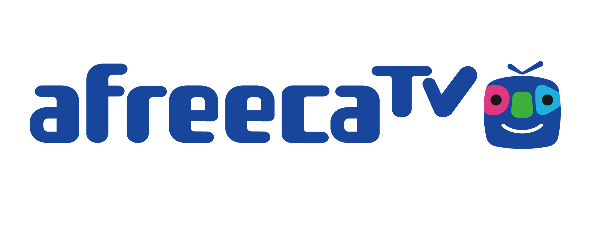

Streamer
대개 유튜브, 트위치, 아프리카TV, 카카오TV 같은 곳에서 인터넷 방송을 하는 사람을 뜻한다. 즉 한국어로는 통상 인터넷 방송인이라고 불리는 사람들이다. 인터넷에서 음성 파일이나 동영상 파일 등을 실시간으로 다운받아 재생하는 기법을 의미하는 스트리밍의 원형인 stream에 행위자를 뜻하는 접미사 -er를 붙인 단어.
국내에서 스트리머라는 용어는 인터넷 방송을 하는 사람에게 쓰이기도 하지만, 99%는 주로 트위치에서 방송하는 인터넷 방송인을 찝어서 지칭할 때 쓰인다. 인터넷 방송을 하는 사람을 전부 지칭하려면 보통 '인터넷 방송인' 이라고 칭하고, 실제로 나무위키에서도 '(인터넷 방송인)'이라는 분류가 붙는다. 이는 플랫폼마다 방송인을 뜻하는 단어가 제각각인데서 기인하는데, 아프리카TV는 자사에서 방송하는 방송인들을 가리켜 BJ라는 용어를, 네이버TV는 크리에이터, 카카오TV는 PD, 유튜브는 크리에이터와 유튜버로 부른다. 그렇다고 서로 다른 플랫폼에서 인터넷 방송인을 엇갈려 부른다고 해서 특별히 틀린 말도 아닐 뿐더러 실제로 엇갈려 부르는 경우도 많이 있다.
외국에서는 스트리머는 stream + er, 말 그대로 스트리밍을 하는 사람이라는 일반명사라서 일일이 플랫폼에 따라 구별하지 않고 그냥 브로드캐스터, 크리에이터 등으로 불린다. 실제로 트위치 설정을 영어로 변경하면 스트리머가 아닌 모두 Creator라고 쓰고 있고, 채팅 배지에도 Broadcaster라고 쓰여 있다.
스트리머들의 사건·사고가 계속해서 터지고 있고, 방송인이라는 본분에 맞지 않게 사색을 띠는 방송도 늘어서인지 스트리머가 아닌 스트리퍼라고 부르며 반감을 나타내는 사람도 늘었다. 처음에는 시청자들 사이에서 농담으로 사용했지만, 여러 스트리머들이 물의를 빚다 보니 이렇게 반감을 나타내는 사람이 늘어난 것으로 보인다.